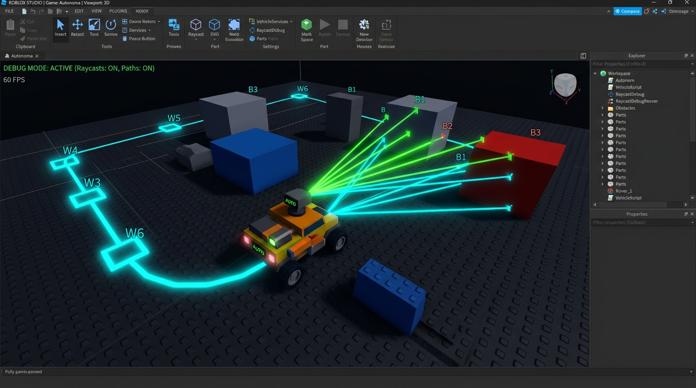
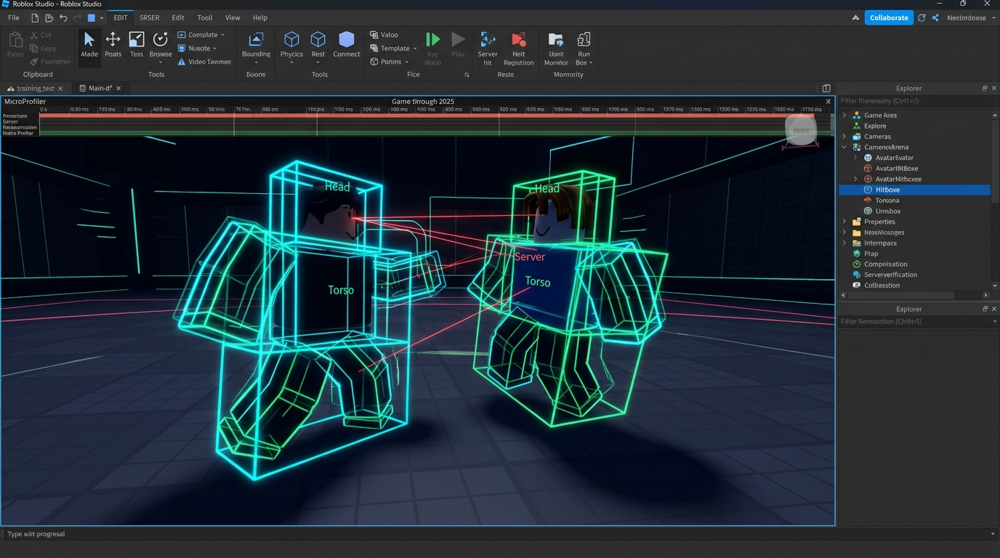

Hi, I'm Adam — Senior Roblox Systems Architect
Senior Roblox Developer with 6+ years of development experience engineering core architectural libraries, custom pattern binders, phased lifecycle orchestrators, and authoritative server algorithms. Built strictly via Rojo, Wally, and Git.
-- [ProductionCore / ServerModules / AIService.luau]
-- Multi-agent autonomous navigation, raycast obstacle steering & vehicle torque physics
local Players = game:GetService("Players")
local Workspace = game:GetService("Workspace")
local RunService = game:GetService("RunService")
local CollectionService = game:GetService("CollectionService")
local AIService: any = {}
AIService.Metadata = {
Priority = 8,
}
local _npcs: { [Model]: any } = {}
local _characterVehicleSlowTime: { [Model]: number } = {}
local _charLastSpatialPos: { [Model]: Vector3 } = {}
-- Dynamic safe zone containment with lerped vector pull strength
local function _keepInZone(npc: Model, targetPos: Vector3): Vector3
if not _zoneService then return targetPos end
local stormCenter = _zoneService.GetStormCenter()
local stormRadius = _zoneService.GetStormRadius()
if not stormCenter or not stormRadius then return targetPos end
local npcPos = npc:GetPivot().Position
local distToCenter = Vector2.new(npcPos.X - stormCenter.X, npcPos.Z - stormCenter.Z).Magnitude
local safetyThreshold = stormRadius * 0.85
if distToCenter > safetyThreshold then
local pullStrength = math.clamp((distToCenter - safetyThreshold) / (stormRadius - safetyThreshold), 0, 1)
local flatCenter = Vector3.new(stormCenter.X, targetPos.Y, stormCenter.Z)
return targetPos:Lerp(flatCenter, pullStrength)
end
return targetPos
end
-- Multi-angle raycast obstacle avoidance for autonomous agents
local function _getObstacleAvoidanceSteerOffset(seat: VehicleSeat, range: number): number
local cframe = seat.CFrame
local origin = seat.Position + cframe.LookVector * (seat.Size.Z / 2 + 1)
local rayParams = RaycastParams.new()
rayParams.FilterType = Enum.RaycastFilterType.Exclude
rayParams.FilterDescendantsInstances = { seat.Parent }
local forwardDir = cframe.LookVector * range
local leftDir = (cframe * CFrame.Angles(0, math.rad(25), 0)).LookVector * range
local rightDir = (cframe * CFrame.Angles(0, math.rad(-25), 0)).LookVector * range
local hitForward = Workspace:Raycast(origin, forwardDir, rayParams)
local hitLeft = Workspace:Raycast(origin, leftDir, rayParams)
local hitRight = Workspace:Raycast(origin, rightDir, rayParams)
local steerOffset = 0
if hitForward then
local distLeft = hitLeft and (hitLeft.Position - origin).Magnitude or range
local distRight = hitRight and (hitRight.Position - origin).Magnitude or range
steerOffset = if distLeft > distRight then -1.0 else 1.0
elseif hitLeft then
local leftDist = (hitLeft.Position - origin).Magnitude
steerOffset = (1 - (leftDist / range)) * 0.8
elseif hitRight then
local rightDist = (hitRight.Position - origin).Magnitude
steerOffset = -(1 - (rightDist / range)) * 0.8
end
return steerOffset
end
-- Server-side vehicle physics & torque velocity computation
local function _updateVehiclePhysicsServer(car: Model, throttleInput: number, steeringInput: number, deltaTime: number)
local chassis = car:FindFirstChild("Chassis") :: BasePart?
local engine = car:FindFirstChild("Engine")
local steering = car:FindFirstChild("Steering")
local wheels = car:FindFirstChild("Wheels")
if not (chassis and engine and steering and wheels) then return end
-- Convert relative linear velocity to MPH
local relativeVelocity = chassis.CFrame:VectorToObjectSpace(chassis.AssemblyLinearVelocity)
local forwardSpeed = (-relativeVelocity.Z / 5280) * 3600
-- [REDACTED: Non-linear torque curve interpolation and Differential Motor sync]
local torqueAlpha = math.clamp(math.abs(forwardSpeed) / 70, 0, 1)
local torque = 25000 + (5000 - 25000) * torqueAlpha
-- [REDACTED: Tactical scoring evaluation & Pathfinding compute]
end
return AIServiceCore Systems & Libraries
Custom-built architectural libraries and authoritative server systems powering enterprise-grade Roblox game modes.

Autonomous AI & Vehicle Navigation Core
PathfindingService • Raycast Avoidance • State MachineFull server-side navigation engine featuring dynamic raycast obstacle avoidance (25° scanning cone), autonomous vehicle hijacking with server-side torque/physics simulation, dynamic storm zone retention math, and pluggable tactical behaviors (Tactician, Survivor, Berserker).

Authoritative Combat & Anti-Cheat Core
AntiCheatService • Displacement Auditing • BanAsync
Server-authoritative physics verification and security enforcement. Features real-time instant displacement auditing, suspicion score decay algorithms, executor detection via trap honeypots, and automated universe-wide suspensions with Players:BanAsync.
Atomic Tree Pattern Binding Library
AtomicBinding.luau • Path Resolver • Teardown DtorsA custom pattern-matching library for Roblox instance hierarchies. Resolves complex multi-branch manifests dynamically, handles child additions/removals with zero race conditions, and guarantees strict teardown execution (dtors) with integrated MicroProfiler instrumentation.
Phased Lifecycle & Boot Orchestrator
ModuleLoader.luau • Phased Init/Start • Client Pacing
Enterprise module loading architecture featuring discrete bootstrap scopes (Shared, Server, Client), two-stage lifecycle execution (Init ➔ Start), client-side step pacing to eliminate frame stalls, and real-time boot progress tracking percentages.
Character Ability & Action Pipeline
AbilityService.luau • Cooldown Security • AntiCheat Whitelist
Authoritative server-side ability dispatching engine with high-precision timestamp rate-limiting (os.clock()), dynamic modular service routing, player disconnect garbage collection, and coordinated anti-cheat physics whitelisting during high-velocity bursts or dash actions.
Proximity Interaction & Dynamic Prompts
InteractionController.luau • TagService • Throttled HeartbeatClient-side interaction framework designed for high-density environments (doors, generators, chests, puzzles). Watches CollectionService tags with automated teardown janitors, utilizing a throttled 5 Hz distance evaluation loop to maintain a solid 60 FPS without per-frame overhead.
Dynamic Spatial Zone & Storm Orchestrator
ZoneService.luau • Cubic Hermite Smoothstep • Radial Damage
Multi-phase spatial danger boundary manager for round-based game modes. Interpolates circle shrinking using cubic Hermite curves (3t² - 2t³) for smooth replication, coordinates network events with client visualizers, and performs throttled 1 Hz out-of-bounds radial damage.
Production Code Showcase
Direct implementations extracted from production codebase architecture. Demonstrates type safety, algorithmic rigor, and resilient server-side design.
-- [ProductionCore / Shared / SharedModules / AtomicBinding.luau]
-- Custom pattern-matching library: Resolves hierarchical instance trees with automated destructors
local RootAlias = "root"
local function parsePath(pathStr: string): { string }
local pathArray = string.split(pathStr, "/")
for idx = #pathArray, 1, -1 do
if pathArray[idx] == "" then
table.remove(pathArray, idx)
end
end
return pathArray
end
local function isManifestResolved(resolvedManifest: { [string]: Instance }, manifestSizeTarget: number): boolean
local manifestSize = 0
for _ in pairs(resolvedManifest) do
manifestSize += 1
end
assert(manifestSize <= manifestSizeTarget, manifestSize)
return manifestSize == manifestSizeTarget
end
local function unbindNodeDescend(node: any, resolvedManifest: { [string]: Instance })
if node.instance == nil then return end
node.instance = nil
local connections = node.connections
if connections then
for _, conn in ipairs(connections) do
conn:Disconnect()
end
table.clear(connections)
end
if resolvedManifest and node.alias then
resolvedManifest[node.alias] = nil
end
local children = node.children
if children then
for _, childNode in pairs(children) do
unbindNodeDescend(childNode, resolvedManifest)
end
end
end
local AtomicBinding = {}
AtomicBinding.__index = AtomicBinding
function AtomicBinding.new(manifest: { [string]: string }, boundFn: (any) -> (any))
local parsedManifest = {}
local manifestSizeTarget = 1
for alias, rawPath in pairs(manifest) do
parsedManifest[alias] = parsePath(rawPath)
manifestSizeTarget += 1
end
return setmetatable({
_boundFn = boundFn,
_parsedManifest = parsedManifest,
_manifestSizeTarget = manifestSizeTarget,
_dtorMap = {},
_connections = {},
_rootInstToRootNode = {},
_rootInstToManifest = {},
}, AtomicBinding)
end
function AtomicBinding:bindRoot(root: Instance)
debug.profilebegin("AtomicBinding:BindRoot")
local parsedManifest = self._parsedManifest
local rootInstToRootNode = self._rootInstToRootNode
local rootInstToManifest = self._rootInstToManifest
local manifestSizeTarget = self._manifestSizeTarget
assert(rootInstToManifest[root] == nil)
local resolvedManifest = {}
rootInstToManifest[root] = resolvedManifest
local rootNode = {
alias = RootAlias,
instance = root,
children = {},
connections = {},
}
rootInstToRootNode[root] = rootNode
-- Build hierarchical search tree from path segments
for alias, parsedPath in pairs(parsedManifest) do
local parentNode = rootNode
for idx, childName in ipairs(parsedPath) do
local leaf = idx == #parsedPath
local childNode = parentNode.children[childName] or {}
if leaf then
childNode.alias = alias
else
childNode.children = childNode.children or {}
childNode.connections = childNode.connections or {}
end
parentNode.children[childName] = childNode
parentNode = childNode
end
end
local function processNode(node: any)
local instance = assert(node.instance)
local children = node.children
if node.alias then resolvedManifest[node.alias] = instance end
if children then
local function processAddChild(childInstance: Instance)
local childNode = children[childInstance.Name]
if not childNode or childNode.instance ~= nil then return end
childNode.instance = childInstance
processNode(childNode)
end
local function processDeleteChild(childInstance: Instance)
local childNode = children[childInstance.Name]
if not childNode or childNode.instance ~= childInstance then return end
self:_stopBoundFn(root)
unbindNodeDescend(childNode, resolvedManifest)
end
for _, child in ipairs(instance:GetChildren()) do processAddChild(child) end
table.insert(node.connections, instance.ChildAdded:Connect(processAddChild))
table.insert(node.connections, instance.ChildRemoved:Connect(processDeleteChild))
end
if not children and isManifestResolved(resolvedManifest, manifestSizeTarget) then
self:_startBoundFn(root, resolvedManifest)
end
end
processNode(rootNode)
debug.profileend()
end
return AtomicBinding-- [ProductionCore / Shared / ModuleLoader.luau]
-- Core bootstrap lifecycle engine: Handles phased Init/Start, client pacing, and progress states
local RunService = game:GetService("RunService")
local ReplicatedStorage = game:GetService("ReplicatedStorage")
local ModuleLoader = {}
local ModuleCache = {}
local ScopeBootStateByName = { Shared = false, Server = false, Client = false }
local ScopeBootProgressByName = {}
local function CreateScopeBootProgressState(ScopeName: string)
return {
ScopeName = ScopeName,
CurrentModuleName = "Preparing",
CurrentPhaseName = "Boot",
CurrentModulePercent = 0,
CompletedStepCount = 0,
TotalStepCount = 0,
Percent = 0,
IsComplete = false,
}
end
local function CalculateScopeBootPercent(CompletedStepCount: number, TotalStepCount: number): number
if TotalStepCount <= 0 then return 100 end
local RawPercent = (CompletedStepCount / TotalStepCount) * 100
return math.clamp(math.floor(RawPercent + 0.5), 0, 100)
end
local function CountLifecyclePhaseSteps(LifecycleUnits: { any }, PhaseName: string): number
local Count = 0
for _, Unit in ipairs(LifecycleUnits) do
local Loaded = Unit.Loaded
if type(Loaded) == "table" and type(Loaded[PhaseName]) == "function" then
Count += 1
end
end
return Count
end
local function ExecuteLifecyclePhase(ScopeName: string, LifecycleUnits: { any }, PhaseName: string)
for _, Unit in ipairs(LifecycleUnits) do
local Loaded = Unit.Loaded
if type(Loaded) == "table" and type(Loaded[PhaseName]) == "function" then
debug.profilebegin(ScopeName .. ":" .. Unit.Name .. ":" .. PhaseName)
local success, err = pcall(function()
Loaded[PhaseName](Loaded)
end)
debug.profileend()
if not success then
error(string.format("[ModuleLoader] Error during %s on %s: %s", PhaseName, Unit.Name, tostring(err)))
end
end
end
end
return ModuleLoader--!strict
-- [ProductionCore / ServerModules / AntiCheatService.luau]
local Players = game:GetService("Players")
local RunService = game:GetService("RunService")
export type ViolationData = {
Type: string,
Details: { [string]: any }?,
Timestamp: number,
}
export type PlayerState = {
Player: Player,
Violations: number,
SuspicionScore: number,
JoinTime: number,
LastCheckTime: number,
LastPosition: Vector3?,
LastVerifiedPosition: Vector3?,
LastVelocity: Vector3,
AirTime: number,
BypassUntil: number,
IsWhitelisted: boolean,
}
local AntiCheatService: any = {}
local AntiCheatConfig = {
PositionCheckInterval = 0.1,
MaxInstantDisplacement = 45,
MaxSuspicionScore = 30,
RubberbandThreshold = 8,
DecayRate = 2.0,
NoclipCheck = true,
AutoKickThreshold = 12,
AutoBanThreshold = 20,
StrictPunishment = true,
LogViolations = true,
Whitelist = {} :: { number },
}
local PlayerStates: { [number]: PlayerState } = {}
local ViolationHistory: { [number]: { ViolationData } } = {}
AntiCheatService.Metadata = {
Priority = 5,
}
local function EnforcePunishment(Player: Player, Action: string, Reason: string)
if not AntiCheatConfig.StrictPunishment then
warn(string.format("[AntiCheatService] [DRY RUN] %s on %s. Reason: %s", Action, Player.Name, Reason))
return
end
if Action == "Kick" then
Player:Kick("\n[Security Enforcement]\n" .. Reason)
elseif Action == "Ban" then
pcall(function()
Players:BanAsync({
UserIds = { Player.UserId },
ApplyToUniverse = true,
Duration = 604800,
DisplayReason = "Security Violation: Exploiting Detected",
PrivateReason = Reason,
})
end)
Player:Kick("\n[Security System]\nAccount suspended for exploiting.")
end
end
local function RecordViolation(Player: Player, Violation: ViolationData)
local UserId = Player.UserId
ViolationHistory[UserId] = ViolationHistory[UserId] or {}
table.insert(ViolationHistory[UserId], Violation)
local State = PlayerStates[UserId]
if State then
State.Violations += 1
if Violation.Type == "HoneypotTriggered" or Violation.Type == "ExecutorDetected" then
EnforcePunishment(Player, "Ban", "Unauthorized Honeypot / Exploit Execution")
elseif State.Violations >= AntiCheatConfig.AutoBanThreshold then
EnforcePunishment(Player, "Ban", "Multiple Anti-Cheat Violations")
elseif State.Violations >= AntiCheatConfig.AutoKickThreshold then
EnforcePunishment(Player, "Kick", "Displacement verification threshold exceeded")
end
end
end
return AntiCheatService--!strict
-- [ProductionCore / Shared / Packages / BufferUtil.luau]
local BufferUtil = {}
function BufferUtil.WriteVector3(b: buffer, offset: number, v: Vector3): number
buffer.writef32(b, offset, v.X)
buffer.writef32(b, offset + 4, v.Y)
buffer.writef32(b, offset + 8, v.Z)
return offset + 12
end
function BufferUtil.ReadVector3(b: buffer, offset: number): (Vector3, number)
return Vector3.new(
buffer.readf32(b, offset),
buffer.readf32(b, offset + 4),
buffer.readf32(b, offset + 8)
), offset + 12
end
function BufferUtil.CreateWriter(initialSize: number?)
local b = buffer.create(initialSize or 64)
local cursor = 0
local writer = {}
function writer:WriteU8(v: number)
buffer.writeu8(b, cursor, v)
cursor += 1
end
function writer:WriteF32(v: number)
buffer.writef32(b, cursor, v)
cursor += 4
end
function writer:WriteVector3(v: Vector3)
cursor = BufferUtil.WriteVector3(b, cursor, v)
end
function writer:GetBuffer(): (buffer, number)
return b, cursor
end
return writer
end
return BufferUtil--!strict
-- [ProductionCore / ServerModules / AIService.luau]
local function _isValidTargetForStrategy(npc: Model, targetChar: Model): boolean
local data = _npcs[npc]
if not data then return true end
if data.Strategy == "Tactician" then
if _zoneService then
local stormCenter = _zoneService.GetStormCenter()
local stormRadius = _zoneService.GetStormRadius()
local targetHRP = targetChar:FindFirstChild("HumanoidRootPart")
if stormCenter and stormRadius and targetHRP then
local targetDistToCenter = Vector2.new(targetHRP.Position.X - stormCenter.X, targetHRP.Position.Z - stormCenter.Z).Magnitude
return targetDistToCenter > stormRadius * 0.6
end
end
elseif data.Strategy == "Survivor" then
local hrp = npc:FindFirstChild("HumanoidRootPart")
local targetHRP = targetChar:FindFirstChild("HumanoidRootPart")
if hrp and targetHRP then
local dist = (targetHRP.Position - hrp.Position).Magnitude
return dist < 25
end
end
return true
end
local function _moveNPCTo(npc: Model, targetPos: Vector3, speed: number, dt: number): boolean
targetPos = _keepInZone(npc, targetPos)
local humanoid = npc:FindFirstChildOfClass("Humanoid")
local hrp = npc:FindFirstChild("HumanoidRootPart")
if not humanoid or not hrp then return false end
local currentPos = hrp.Position
local direction = (targetPos - currentPos)
local directionXZ = Vector3.new(direction.X, 0, direction.Z)
local distance = directionXZ.Magnitude
if distance < 1.5 then
humanoid:Move(Vector3.zero, false)
return true
end
humanoid.WalkSpeed = speed
humanoid.AutoRotate = true
humanoid:Move(directionXZ.Unit, false)
-- Anti-stuck jump detection
local data = _npcs[npc]
if data then
local now = os.clock()
local currentSpeed = Vector3.new(hrp.AssemblyLinearVelocity.X, 0, hrp.AssemblyLinearVelocity.Z).Magnitude
if speed > 0 and currentSpeed < 1.5 then
if not data.WalkStuckTime then
data.WalkStuckTime = now
elseif now - data.WalkStuckTime > 0.5 then
humanoid.Jump = true
data.WalkStuckTime = nil
end
else
data.WalkStuckTime = nil
end
end
return false
endlocal Players = game:GetService("Players")
local ReplicatedStorage = game:GetService("ReplicatedStorage")
local AbilityService: any = {}
AbilityService.Metadata = {
Priority = 20,
}
local _maid = nil
local _moduleLoader = nil
local _abilityConfig = nil
local _abilityActivated = nil
local _lastUse = {}
local function _onAbilityActivated(player: Player, abilityName: string, arg1: any, arg2: any)
if typeof(abilityName) ~= "string" then return end
local abilityData = _abilityConfig.Abilities[abilityName]
if not abilityData then return end
local now = os.clock()
_lastUse[player] = _lastUse[player] or {}
local lastTime = _lastUse[player][abilityName] or 0
if now - lastTime < (abilityData.Cooldown - 0.2) then
warn("[AbilityService] Rate limit exceeded for", player.Name, "on", abilityName)
return
end
_lastUse[player][abilityName] = now
-- Coordinate with server anti-cheat to whitelist physics burst during ability
local antiCheat = _moduleLoader and _moduleLoader.RequireScoped("ServerModules.AntiCheatService")
if antiCheat and antiCheat.BypassPlayer then
antiCheat.BypassPlayer(player, 4)
end
if abilityData.ServiceName then
local service = _moduleLoader.Require("Server", "ServerModules." .. abilityData.ServiceName)
if service and service.OnAbilityActivated then
service.OnAbilityActivated(player, abilityName, arg1, arg2)
end
end
end
local function _setupRemotes()
local remotes = ReplicatedStorage:FindFirstChild("Remotes")
if not remotes then
remotes = Instance.new("Folder")
remotes.Name = "Remotes"
remotes.Parent = ReplicatedStorage
end
_abilityActivated = remotes:FindFirstChild("AbilityActivated")
if not _abilityActivated then
_abilityActivated = Instance.new("RemoteEvent")
_abilityActivated.Name = "AbilityActivated"
_abilityActivated.Parent = remotes
end
_maid:GiveTask(_abilityActivated.OnServerEvent:Connect(_onAbilityActivated))
end
function AbilityService.Init(context: any)
_moduleLoader = context.ModuleLoader
local Maid = context.ModuleLoader.RequireShared("SharedModules.Maid")
_maid = Maid.new()
_abilityConfig = context.ModuleLoader.RequireShared("SharedModules.AbilityConfig")
end
function AbilityService.Start(context: any)
_setupRemotes()
_maid:GiveTask(Players.PlayerRemoving:Connect(function(plr)
_lastUse[plr] = nil
end))
print("[AbilityService] Started")
end
function AbilityService.Destroy()
if _maid then
_maid:Destroy()
_maid = nil
end
end
return AbilityServicelocal Players = game:GetService("Players")
local RunService = game:GetService("RunService")
local InteractionController = {}
local _spatialService = nil
local _tagService = nil
local _maid = nil
local CheckInterval = 0.2
local InteractionRadius = 15
local _localPlayer = Players.LocalPlayer
local _activePrompts = {}
function InteractionController.Init(Context)
local ML = Context.ModuleLoader
_spatialService = ML.RequireShared("SharedModules.SpatialService")
_tagService = ML.RequireShared("SharedModules.TagService")
_maid = ML.RequireShared("SharedModules.Maid").new()
end
function InteractionController.Start()
print("[InteractionController] Started")
-- Dynamically watch tags and manage teardown janitors
_tagService.Watch("Interactable", function(instance, janitor)
local function setupPrompt(prompt)
prompt.Enabled = false
_activePrompts[instance] = prompt
end
local prompt = instance:FindFirstChildWhichIsA("ProximityPrompt", true)
if prompt then
setupPrompt(prompt)
else
local conn
conn = instance.DescendantAdded:Connect(function(descendant)
if descendant:IsA("ProximityPrompt") then
setupPrompt(descendant)
if conn then
conn:Disconnect()
conn = nil
end
end
end)
janitor:Add(function()
if conn then
conn:Disconnect()
conn = nil
end
end)
end
janitor:Add(function()
_activePrompts[instance] = nil
end)
end)
-- Throttled proximity loop (5 Hz) prevents per-frame CPU degradation
local timeAccumulator = 0
local heartbeatConn = RunService.Heartbeat:Connect(function(dt)
timeAccumulator += dt
if timeAccumulator < CheckInterval then return end
timeAccumulator = 0
local character = _localPlayer.Character
if not character then return end
local primaryPart = character.PrimaryPart
if not primaryPart then return end
local myPos = primaryPart.Position
for instance, prompt in pairs(_activePrompts) do
local dist = (instance:GetPivot().Position - myPos).Magnitude
if dist <= InteractionRadius then
prompt.Enabled = true
else
prompt.Enabled = false
end
end
end)
_maid:GiveTask(heartbeatConn)
end
function InteractionController.Destroy()
if _maid then
_maid:Destroy()
_maid = nil
end
end
return InteractionControllerlocal Players = game:GetService("Players")
local ReplicatedStorage = game:GetService("ReplicatedStorage")
local RunService = game:GetService("RunService")
local ZoneService = {}
ZoneService.Metadata = {
Priority = 22,
}
local _maid = nil
local _networkRegistry = nil
local _stormStateEvent = nil
local _testConfig = nil
local _initialDiameter = 1000
local _currentDiameter = 1000
local function _updateStormVisuals(diameter: number)
_currentDiameter = diameter
local stormZone = workspace:FindFirstChild("StormZone")
if not stormZone then return end
stormZone:SetAttribute("Diameter", diameter)
end
local function _checkAndDamagePlayers()
local radius = _currentDiameter / 2
local stormZone = workspace:FindFirstChild("StormZone")
local outer = stormZone and stormZone:FindFirstChild("StormWall")
local stormCenter = outer and outer.Position or Vector3.new(0, 0, 0)
for _, player in ipairs(Players:GetPlayers()) do
local char = player.Character
local hrp = char and char:FindFirstChild("HumanoidRootPart")
local humanoid = char and char:FindFirstChildOfClass("Humanoid")
if hrp and humanoid and humanoid.Health > 0 then
local dist2D = Vector2.new(hrp.Position.X - stormCenter.X, hrp.Position.Z - stormCenter.Z).Magnitude
if dist2D > radius then
humanoid:TakeDamage(5)
end
end
end
end
function ZoneService.Init(context: any)
local Maid = context.ModuleLoader.RequireShared("SharedModules.Maid")
_maid = Maid.new()
_networkRegistry = context.ModuleLoader.RequireShared("SharedModules.NetworkRegistry")
_testConfig = context.ModuleLoader.RequireScoped("ServerModules.TestConfig")
_stormStateEvent = _networkRegistry.Resolve("StormStateEvent")
end
function ZoneService.Start(context: any)
if _testConfig and _testConfig.EnableStorm == false then return end
if _testConfig then
_initialDiameter = _testConfig.StormInitialDiameter or 1000
end
_currentDiameter = _initialDiameter
_updateStormVisuals(_initialDiameter)
local currentPhaseIndex = 1
local phases = (_testConfig and _testConfig.StormPhases) or {
{ WaitDuration = 15, ShrinkDuration = 25, TargetDiameter = 300 }
}
local function runNextPhase()
if currentPhaseIndex > #phases then return end
local phase = phases[currentPhaseIndex]
local activeMaid = _maid
task.delay(phase.WaitDuration, function()
if not _stormStateEvent or _maid ~= activeMaid then return end
_stormStateEvent:FireAllClients("Shrinking", phase.ShrinkDuration)
local startDiameter = _currentDiameter
local targetDiameter = phase.TargetDiameter
local startTime = os.clock()
local duration = phase.ShrinkDuration
local conn
conn = RunService.Heartbeat:Connect(function()
if _maid ~= activeMaid then conn:Disconnect() return end
local elapsed = os.clock() - startTime
local alpha = math.clamp(elapsed / duration, 0, 1)
-- Cubic Hermite smoothstep for natural boundary shrinking
local t = alpha * alpha * (3 - 2 * alpha)
local currentDiameter = startDiameter + (targetDiameter - startDiameter) * t
_updateStormVisuals(currentDiameter)
if alpha >= 1 then
conn:Disconnect()
_stormStateEvent:FireAllClients("Finished")
currentPhaseIndex += 1
runNextPhase()
end
end)
if _maid == activeMaid then
activeMaid:GiveTask(conn)
else
conn:Disconnect()
end
end)
end
runNextPhase()
-- Periodic damage tick (1.0s accumulator) avoids per-frame CPU overhead
local damageTimer = 0
local damageConn = RunService.Heartbeat:Connect(function(dt)
damageTimer += dt
if damageTimer >= 1.0 then
damageTimer = 0
_checkAndDamagePlayers()
end
end)
_maid:GiveTask(damageConn)
print("[ZoneService] Started")
end
function ZoneService.GetStormCenter(): Vector3
local stormZone = workspace:FindFirstChild("StormZone")
local outer = stormZone and stormZone:FindFirstChild("StormWall")
return outer and outer.Position or Vector3.new(0, 0, 0)
end
function ZoneService.GetStormRadius(): number
return _currentDiameter / 2
end
function ZoneService.Destroy()
if _maid then
_maid:Destroy()
_maid = nil
end
end
return ZoneServiceEngineering Services & Standards
Production-tested backend and client systems delivered on milestone-based schedules with strict security and zero memory leaks.
Combat & Weapon Systems
Server-validated raycast hitboxes, lag compensation, combo state machines, stun/knockback physics, and modular ability pipelines with cooldown managers.
Anti-Cheat & Exploit Defense
Authoritative server audits catching speed hacks, teleportation, noclip, flight, and suspicious remote injection with automated universe ban logs.
Data Architecture & Economy
Production-grade data stores via session-locking ProfileService, anti-dupe item transactions, cross-server inventory syncing, and global leaderboards.
Network & Buffer Optimization
Low-latency multiplayer replication using raw Luau buffer manipulation, spatial grid indexing for zone queries, and zero-allocation loops.
Core Gameplay & Progression
Round managers, clan/guild structures with persistent upgrades, player leveling/XP curves, daily rewards, dynamic shops, and live admin panels.
Cross-Platform UI & Keybinds
Unified input abstraction seamlessly supporting PC, Mac, Console (Gamepad), and Mobile touch devices, complete with responsive HUDs and setting suites.
Technical Stack & Paradigms
Industry standard tools, libraries, and engineering disciplines applied across large-scale codebases.
Languages & Typing
- Luau Strict (`--!strict`): 100% static type coverage, interfaces, generics, metatable OOP.
- Lua 5.1 & Metatables: Deep understanding of Luau VM bytecode, memory garbage collection, and custom class abstractions.
- TypeScript (roblox-ts): Compile-to-Luau pipeline support for multi-contributor engineering teams.
Toolchain & DevOps
- Rojo & VS Code: External multi-file codebase structure synced bi-directionally with Roblox Studio.
- Wally & Foreman: Strict package dependency management and reproducible development toolchains.
- Git & GitHub Actions: Semantic versioning, code reviews, automated formatting via StyLua, and Selene linter.
Frameworks & Lifecycle
- Custom ModuleLoader: Phased bootstrap system with scoped Init/Start cycles and pacing controls.
- AtomicBinding Pattern: Recursive instance hierarchy binder eliminating race conditions and memory leaks.
- Janitor / Maid Class: Defensive resource management ensuring zero dangling events upon instance destruction.
Security & Network Code
- Server-Authoritative Anti-Cheat: Noclip, speed, and instant displacement verification with universe bans.
- Buffer Serialization: Custom byte packing and delta compression via the Luau Buffer API.
- MicroProfiler Tuning: Eliminating garbage collection spikes and high-frequency render overhead.
Connect with me
Feel free to reach out on Discord or connect via my developer profiles to discuss systems architecture or technical questions.